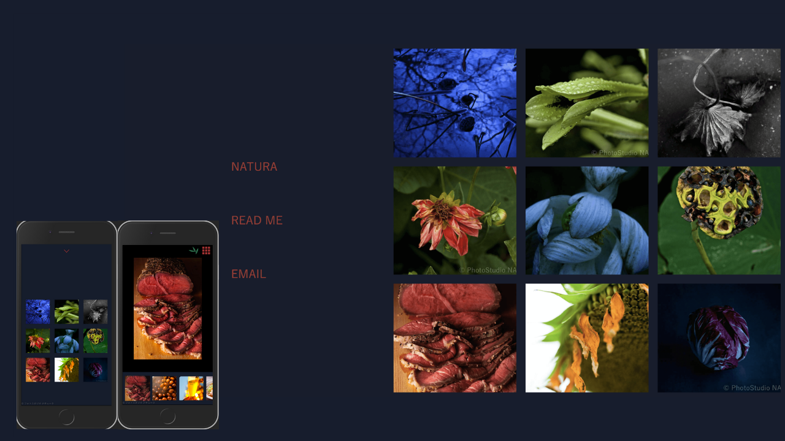
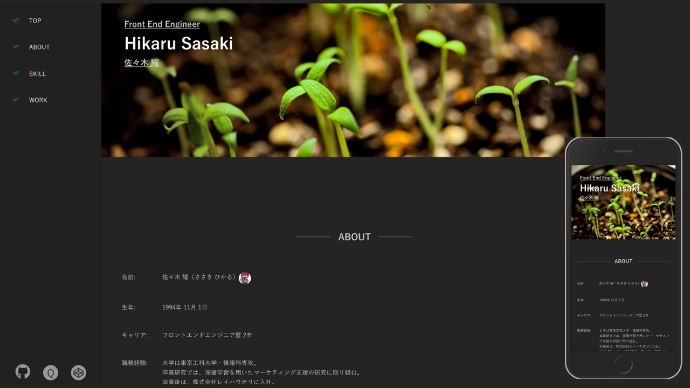
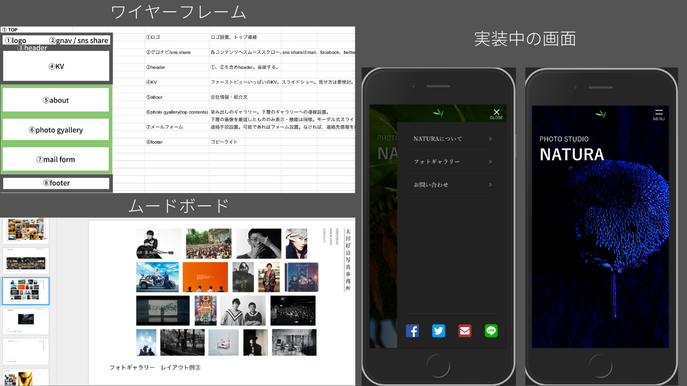
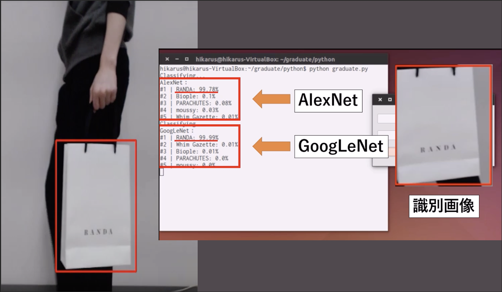
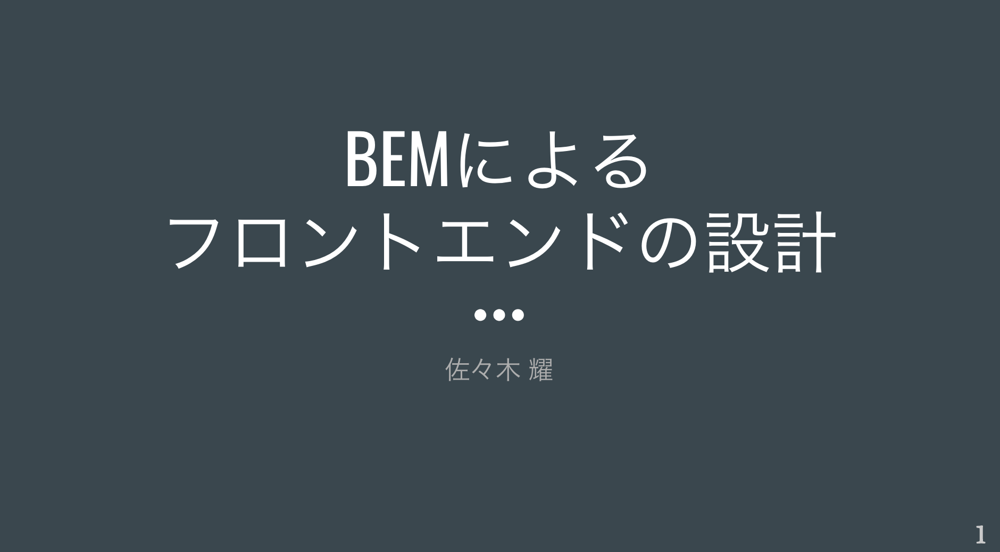

Front End Engineer
Hikaru Sasaki
佐々木 耀
ABOUT
-
- 名前:
- 佐々木 耀（ささき ひかる）
-
- 生年:
- 1994年 11月 1日
-
- キャリア:
- フロントエンドエンジニア歴 2年
-
- 職務経験:
- 大学は東京工科大学・情報科専攻。
卒業研究では、深層学習を用いたマーケティング支援の研究に取り組む。
卒業後は、株式会社レイハウオリに入社。
約1年間、本社で受託案件に務める。電話やミーティングで顧客折衝を経験。
ランディングページ制作から企業の社内ツールのフロントエンド部分の制作に携わる。
その後、パートナー会社にて、大手飲食サイト・サービスの1つの保守運用プロダクトチームに配属。
複雑な仕様の把握や、保守性・拡張性に注力した開発方法を経験する。
SKILL
-
種類 使用期間 レベル 言語(フロントエンド) HTML 2年 仕様・デザインに合わせ実装可能 CSS 2年 仕様・デザインに合わせ実装可能 EJS 1年 仕様・デザインに合わせ実装可能、簡単なプログラミングが可能 Stylus 1年 仕様・デザインに合わせ実装可能、簡単なプログラミングが可能 Sass 1.5年 仕様・デザインに合わせ実装可能、簡単なプログラミングが可能 java script 2年 簡単なプログラミングが可能 jQuery 2年 フロントエンド領域で基本的に必要とされるwebの機能は実装可能 Vue.js 1ヶ月 自己学習で使用（実務外） React.js 半年 簡単なプログラミングが可能 D3.js 1ヶ月 自己学習で使用（実務外） Immutable.js 半年 簡単なプログラミングが可能 ツール Git 3年 基本的な機能を使用可能 gulp 1年半 簡単なタスクの設定可能 webpack 1ヶ月 バンドル設定可能 クリエイティブツール Photoshop 1年 基本操作可能 Illustrator 1年 基本操作可能 sketch 半年 基本操作可能 言語(その他) java 1年 簡単なプログラミングが可能 (大学時代に履修) C言語 1年 簡単なプログラミングが可能 (大学時代に履修) PHP 半年 簡単なプログラミングが可能 (大学時代に履修) mySQL 半年 簡単なプログラミングが可能 (大学時代に履修) Python 半年 簡単なプログラミングが可能 (卒業研究で使用) Google Apps Script 1年 自己学習で使用（実務外） ツール(その他) docker 半年 学生時代の卒業研究で使用 深層学習(caffe, chainer) 半年 学生時代の卒業研究で使用 DIGITS 半年 学生時代の卒業研究で使用 dlib 半年 学生時代の卒業研究で使用 Unity 1ヶ月 自己学習で使用（実務外） Electron 1ヶ月 自己学習で使用（実務外）
WORK
CLIENT WORK
LIFE WORK
-

PHOTOSTUDIO NATURA
- https://photostudionatura.netlify.com/
- 制作時期： 2018/01
- 父親の会社であるフォトスタジオの紹介サイトを制作致しました。作成期間は、3人日程です。フォトギャラリーコンテンツがメインなので、管理しやすいようにjson形式でカテゴリー毎の画像を追加できるようにしています。
-
GENERATOR01
- https://headgenerator.netlify.com/
- 制作時期： 2017/09
- 個人でサイトを制作する際にmetaタグなどhead内の要素を自由にカスタマイズ・作成できるようなジェネレータをイメージして作りました。作成期間は1.5人日ほどです。こちらもjson形式でデータを管理しています。機能は十分ですがUI改善施策中なので、まだ実用化には遠いです。
-

自己紹介サイト
- https://hshp.netlify.com/
- 制作時期： 2017/05
- 本サイトです。現在もアップデート中です。基本的にはejsとscssで管理しています。SPAフレームワークのような管理方法を用い、jsonデータを親から子パーツへ受け渡し、javascriptでコンテンツ生成をしています。
-

PHOTOSTUDIO NATURA(改)
- https://sad-bohr-a8c08b.netlify.com/
- 制作時期： 2017/11
- フォトスタジオ ナチューラのホームページの改善を行なっています（現在作成途中）。アクセス速度などを考慮し、React.jsを用いて作成しています。前回はフォトグラファーサイト寄りだったので、今回は会社公式サイトとしての実用に向けて制作しています。またより質にこだわり、ワイヤーフレーム・ムードボードを制作し、コーディング着手までに時間を掛け、準備を行いました。
STUDY
-

【卒業研究】ショップ袋認識を用いた人物属性推定方法
- https://docs.google.com/presentation/d/17k_PR6Qs1cWmHQLXAzCAK8u0X_woMeoWM-2DX2X3uAI/edit?usp=sharing
- 制作時期： 2017/03
- 卒業研究内容です。マーケティング情報取得の支援をテーマに深層学習を用いた研究を行いました。
-

【勉強会】これからはじめるSVG
- https://docs.google.com/presentation/d/1GndJ2WKrL7M_4a-PsGaOB4kE7cau9vlX_BO6xuskaIw/edit?usp=sharing
- 制作時期： 2018/04
- SVGについてリサーチした結果をまとめました。
-

【勉強会】BEMによるフロントエンドの設計
- https://docs.google.com/presentation/d/1n4MdDpM46tNK0L03drlepdC5DtzbRfnnL1iNAYldOAk/edit?usp=sharing
- 制作時期： 2018/05
- 保守をする上での必要な知識としてBEMについてまとめてみました。